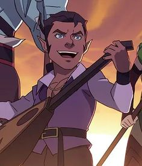
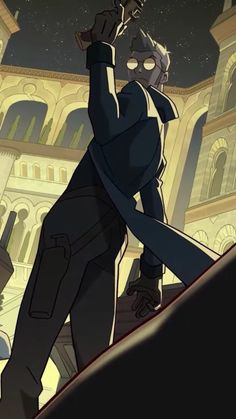
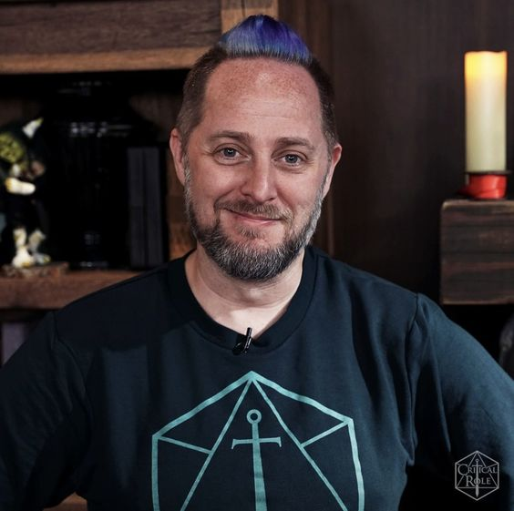
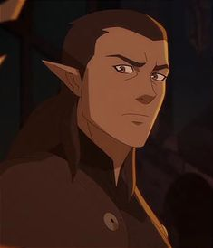
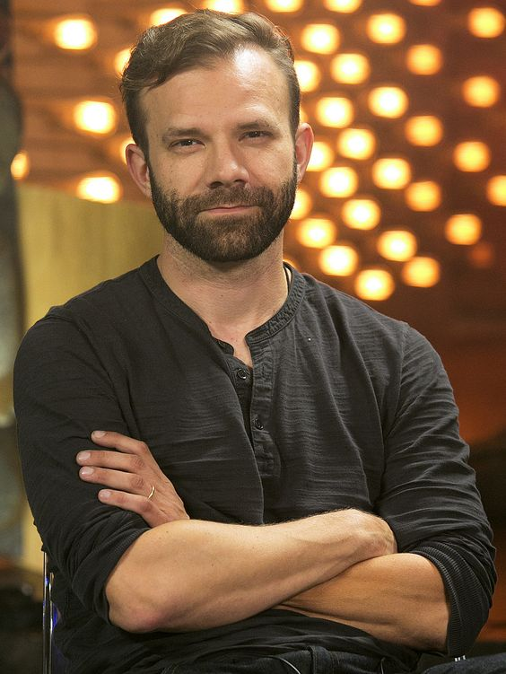
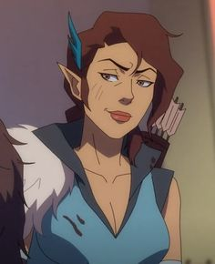
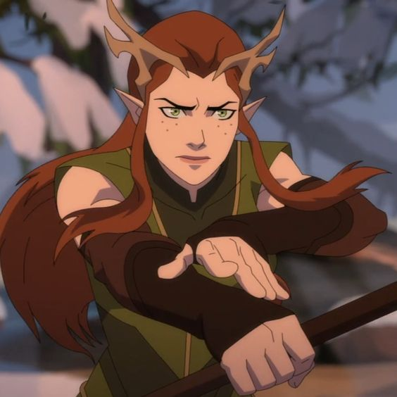

Personagens e Atores
Composto por um elenco diversificado de personagens que enfrentam perigos inimagináveis em um mundo de fantasia rico e vibrante. Os atores que deram vida a esses personagens são membros fundadores do Critical Role, um grupo que ganhou popularidade por suas impressionantes performances ao vivo em campanhas de D&D.
Conheça Pike Trickfoot feita por Ashley Johnson


Pike Trickfoot é uma personagem da série "Critical Role" interpretada por Ashley Johnson. Pike é uma clériga gnoma] devota da deusa da luz Sarenrae. Ela é conhecida por sua coragem e pela habilidade de curar seus aliados em combate, além de ser uma das personagens mais carismáticas e altruístas do grupo Vox Machina. Pike tem uma personalidade calorosa e um grande senso de humor, e é leal aos seus amigos e à sua deusa.
Ashley Johnson, a atriz que dá vida a Pike, tem uma carreira notável e diversificada no entretenimento. Ela começou sua carreira ainda jovem, com papéis em séries de TV como "Growing Pains" e "Ben & Kate". Johnson também é conhecida por seu trabalho como dubladora em vários videogames e animações. Seu papel mais famoso é a Ellie, a protagonista da série de jogos "The Last of Us", uma performance que recebeu aclamados elogios tanto da crítica quanto dos fãs. Além disso, Ashley Johnson teve papéis importantes em animações como "Teen Titans" e "Avatar: The Last Airbender", e também participou de produções teatrais e cinematográficas. Sua versatilidade e talento a tornaram uma presença marcante em diversos meios de entretenimento.
Conheça Scanlan Shorthalt feito por Sam Riegel


Scanlan Shorthalt é um dos personagens da primeira campanha de Critical Role, interpretado por Sam Riegel. Scanlan é um bardo gnomo conhecido por sua personalidade encantadora, suas habilidades de improvisação e sua tendência a ser um pouco vaidoso e egoísta. Ele é um mestre da música e da magia, usando sua música e habilidades para apoiar seus aliados e manipular seus inimigos. Scanlan é também famoso por seu charme e suas muitas aventuras românticas.
Sam Riegel é o ator e dublador que interpreta Scanlan Shorthalt. Sam é um veterano no mundo da dublagem e da atuação. Ele trabalhou em uma ampla gama de projetos, incluindo dublagem de personagens em séries animadas e videogames. Alguns dos papéis mais notáveis de Sam Riegel incluem Donatello em "Teenage Mutant Ninja Turtles", Gingerbread Man em "Shrek the Third", e Kazuichi Soda em "Danganronpa 2: Goodbye Despair". Sam também é conhecido por seu trabalho em "Critical Role", onde é um dos fundadores e um dos principais jogadores do elenco. Sua habilidade em criar personagens memoráveis e sua versatilidade como ator e dublador têm sido amplamente elogiadas.
Conheça Percival De Rolo feito por Taliesin Jaffe


Percival de Rolo é um personagem da primeira campanha de Critical Role, interpretado por Taliesin Jaffe. Percival, ou Percy, é um humano pistoleiro e inventor, conhecido por sua personalidade sofisticada e um passado trágico. Ele vem de uma família nobre que foi massacrada, o que o motivou a buscar vingança e justiça. Percy usa uma variedade de armas de fogo e é um mestre da engenharia e invenção, criando dispositivos e armas sofisticadas para ajudar seu grupo. Sua jornada é marcada pela busca por redenção e pelo enfrentamento de seus próprios demônios pessoais.
Taliesin Jaffe, o ator que dá vida a Percy, é um ator e dublador com uma carreira notável em diversos campos. Além de interpretar Percival em Critical Role, Taliesin é conhecido por seu trabalho como dublador em videogames e animações. Ele forneceu a voz para personagens como Kadaj em "Final Fantasy VII: Advent Children", Kashimo em "Jujutsu Kaisen", e Ryuji Sakamoto em "Persona 5". Jaffe também trabalhou em séries de animação como "The Legend of Korra" e "Teen Titans". Sua habilidade em criar personagens complexos e sua presença carismática o tornaram um artista muito respeitado tanto na atuação quanto na dublagem.
Conheça Vax'ildan feito por Liam O'Brien


Vax'ildan é um dos personagens da primeira campanha de Critical Role, interpretado por Liam O'Brien. Vax'ildan, ou Vax, é um elfo meio-elfo e um dos irmãos gêmeos de Vex'ahlia, com quem compartilha uma profunda ligação. Vax é um rogue (ladrão) e ranger habilidoso, conhecido por sua destreza em combate, furtividade e habilidades de rastreamento. Ele é um personagem sombrio e introspectivo, com uma história marcada por tragédias pessoais e um forte senso de dever para com sua família e seus amigos. Vax também lida com questões complexas relacionadas à sua busca por redenção e sua conexão com o mundo espiritual.
Liam O'Brien, o ator que interpreta Vax, é um renomado dublador e ator de voz com uma carreira diversificada. Ele é conhecido por fornecer a voz para muitos personagens icônicos em videogames e animações. Alguns de seus papéis mais notáveis incluem Kefka Palazzo em "Final Fantasy VI", Ryuji Sakamoto em "Persona 5", e Zoroark em "Pokémon". Liam também trabalhou em produções de animação como Tenzin em "The Legend of Korra" e Malthael em "Diablo III". Seu talento para dar vida a personagens complexos e suas habilidades em atuação de voz fazem dele um artista altamente respeitado na indústria.
Conheça Vex'ahlia feito por Laura Bailey


Vex'ahlia é uma das personagens da primeira campanha de Critical Role, interpretada por Laura Bailey. Vex, ou Vex'ahlia, é uma meio-elfa ranger e ladra, conhecida por suas habilidades excepcionais com o arco e sua astúcia em situações de combate e furtividade. Ela é a irmã gêmea de Vax'ildan e tem uma personalidade astuta e pragmática, com uma forte inclinação para proteger aqueles que ama. Vex também possui uma conexão profunda com a natureza e tem uma relação próxima com seu companheiro animal, um grifo chamado "Sylas". A personagem é marcada por seu passado difícil e por sua busca por segurança e prosperidade para si e para seu irmão.
Laura Bailey, a atriz que interpreta Vex, é uma dubladora e atriz amplamente reconhecida por seu trabalho em uma variedade de mídias. Laura é conhecida por sua versatilidade e talento em dublagem, tendo interpretado uma ampla gama de personagens em videogames e animações. Alguns dos papéis mais notáveis de Laura incluem Jinx em "Arcane", Jaina Proudmoore em "World of Warcraft", e Nala em "O Rei Leão" (versão animada). Laura também teve papéis importantes em "The Last of Us Part II" como Abby e em "Fire Emblem: Three Houses" como Fódlan. Sua habilidade de trazer profundidade e complexidade aos personagens a estabeleceu como uma das principais vozes da indústria de entretenimento.
Conheça Grog Strongjaw feito por Travis Willingham


Grog Strongjaw é um personagem da primeira campanha de Critical Role, interpretado por Travis Willingham. Grog é um golias bárbaro conhecido por sua força imensa e sua personalidade exuberante. Ele é notável por seu comportamento impulsivo e por sua grande lealdade e carinho pelos amigos. Apesar de seu exterior imponente e sua paixão pelo combate, Grog é também um personagem com um grande coração e um senso de humor único. Sua jornada inclui a busca por identidade e a luta contra seus próprios demônios internos.
Travis Willingham, o ator que dá vida a Grog, é um dublador e ator de voz amplamente reconhecido, com uma carreira distinta na dublagem e atuação. Travis é conhecido por seu trabalho em vários projetos de videogame e animação, incluindo personagens como Thor em "Marvel's Avengers", Roy em "Fire Emblem: Three Houses", e Knuckles the Echidna em vários jogos da série "Sonic the Hedgehog". Além de sua carreira na dublagem, Travis também é um dos cofundadores de Critical Role, contribuindo significativamente para o sucesso da série. Seu talento e presença carismática fazem dele uma figura respeitada na indústria de entretenimento.
Conheça Keyleth feito por Marisha Ray


Keyleth é uma personagem da primeira campanha de Critical Role, interpretada por Marisha Ray. Keyleth é uma druidesa meio-elfa e membro da raça dos "Ashari", uma ordem de druidas dedicados à proteção dos elementos naturais. Ela é conhecida por suas habilidades de transformação e magia druídica, que lhe permitem manipular e se conectar com os elementos da natureza. Keyleth é uma personagem marcada pela busca de crescimento pessoal e pela responsabilidade de cumprir seu papel como futura líder de sua ordem. Sua jornada é uma mistura de idealismo, insegurança e determinação, refletindo seu desejo de equilibrar seus deveres e suas aspirações pessoais.
Marisha Ray, a atriz que dá vida a Keyleth, é uma atriz e dubladora com uma carreira distinta. Além de seu trabalho como Keyleth em Critical Role, Marisha é conhecida por sua dublagem em videogames e animações, incluindo papéis como Cassandra Pentaghast em "Dragon Age: Inquisition" e Viktor em "League of Legends". Marisha também é uma das cofundadoras de Critical Role, desempenhando um papel importante na criação e sucesso da série. Seu talento para interpretar personagens complexos e seu envolvimento no projeto são amplamente reconhecidos.
Conheça O mestre Matthew Mercer!

Matthew Mercer é um ator e dublador renomado, conhecido principalmente por seu trabalho como Dungeon Master em Critical Role. Em Critical Role, Mercer é o narrador e mestre do jogo, conduzindo as aventuras e histórias dos personagens dos jogadores com uma habilidade notável em criar mundos ricos e dinâmicos. Ele é amplamente elogiado por sua capacidade de dar vida a uma ampla gama de NPCs (personagens não-jogadores) e por seu estilo de narração envolvente e criativo.
Além de seu trabalho em Critical Role, Matthew Mercer também é um dublador de destaque na indústria de videogames e animações. Ele forneceu as vozes para vários personagens icônicos, incluindo McCree em "Overwatch", Levi Ackerman em "Attack on Titan", e Garrus Vakarian em "Mass Effect".
Na série animada The Legend of Vox Machina, que é uma adaptação da primeira campanha de Critical Role, Matthew Mercer faz uma aparição especial. Ele não é apenas o criador e narrador da campanha original, mas também empresta sua voz para vários personagens secundários na animação. Sua participação adiciona um toque autêntico e especial à série, reconhecendo sua contribuição significativa para a história e o universo de Vox Machina.